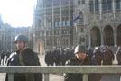
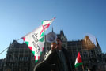
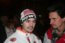

2007.02.03., szombat
tomcat
blog
droidzóna
levrov
Mi folyik a Kossuth téren? Kis morzsácskákból sikerült összerakni, mi is akart lenni ez a FUK-nak indult, ám elfuserált kis kiabálgatásba fulladt Kossuth tér-afterparty.
Reggel, ugyebár, elterjedt a hír, hogy Orbán Viktor néhány képviselõtársával odament a Kossuth térre, és szétpakolta egy kicsit a kordont. Én egyébként elég érdekes módon szereztem errõl tudomást. Reggel Athina felriadt mellettem, felrázott, és közölte a fentieket. Az érdekes ebben az, hogy mélyen aludt, és valószínûleg álmában sem tudja fogni a Hír TV-t, rádió vagy ilyesmi pedig nem szólt sehol, de nem is hallatszana be a prímán hangszigetelt lakásba. Mégis, kedvesem egyszerûen ezzel ébredt, én meg félkómásan kipattantam az ágyból, rohantam a géphez, és konstatáltam, hogy tényleg így van. Az már bootolás és felöltözés után ért el az agyamig, hogy honnan a picsából tudta ezt, elvégre aludt, mint akit agyonvertek, kábé tegnap este tíz óra óta! Mindezidáig nem sikerült megmagyarázni.
Hogy miért jutott eszébe Viktorkának épp most, nagy hirtelen káoszbrigádot játszani, azt egyszerûbb megmagyarázni. Rászóltak ugyanis mindenféle európai pártszervezetek, amelyeknek a Fidesz is tagja, hogy baszki, most már csinálj valamit, mert úgy kivágunk titeket, hogy a lábatok nem éri a földet. Hosszas agyalás után ezt sikerült kitalálni. Tegyük arrébb a kordont, és akkor csináltunk valamit. A tömeg örülni fog, a Viktor név megint szép lesz, méltó régi, nagy híréhez, és utána jót lehet reggelizni a sarki Parlament Caféban. A tömeg pedig örült is, és tódult a Kossuth térre.
Persze legott megindult a fingfûrészelés, hogy ezt mégis hogy gondolta a Zorbánviktor, elvégre az a kordon ott, az maga a REND, és aki rendetlenkedik, azt a szigorú apuka elfenekeli (mellesleg tessék ránézni Gyurcsányra és Dobrev Klárára, és a fenti, visszatérõ gyurcsányi gondolatmotívumot továbbvezetve elképzelni az õ intim életüket, mindegy, nem érdekes). Szóval Orbán megsértette a RENDet, és igaz ugyan, hogy a kordon maga is megsértett valami törvényt, de az más, a REND, az sokkal fontosabb, és mindenki meg lesz bírságolva, aki ott volt, akinek pedig van kék egyenruhája, valamint élni és mozogni képes (szolgálni és védeni már régen nem kell), azonnal rohanjon, és pakolja vissza azt a kordont. Demszky mindjárt odaböfögte azt is, hogy Orbán Viktornak a turulszobrot kéne lebontania. Igen, BRAVÓ, azt hiszem, ez az elmúlt 16 év legimbecillisebb politikai nyilatkozata, szerintem meg Demszkyt kellene lebontani, legközelebb torta helyett baseball-ütõvel. Kis kipillantás: észrevettétek, hogy a nemrég még napi témaként kezelt kátyú/kutyaszar/légszenny triász egyik napról a másikra tabu lett a sajtóban? Most már Fõpolgármester Úrról beszélünk, a fõváros nagyívû fejlõdésérõl, és ha bárhol rosszat szól valaki a Fõpolgármester Úrra egy netes fórumon, megfelelõen képzett SZDSZ-pártaktivisták sietnek lehurrogni a leghajmeresztõbb ostobaságokkal és látványos százalékokat összezagyváló eredménylistákkal. Ugyanígy van egyébként egy Miniszterelnök Urunk is, akire csak áhítatosan csillogó szemmel szabad felnézni, mert õ adja nekünk a Rendet, a Fejlõdést, és a Fejlövést is azoknak, akiknek nem megfelelõen csillog a szemük. Estére már tudjuk, hogy a kordonbontás "több, mint aggályos", valamint "tízmillió magyar ember életét sodorja veszélybe", és oda a demokrácia, jön a fehérterror, mindenki vessen magára, aki nem maradt otthon, RENDes állampolgárként.
Van azért még e kis hazában, akit hiába lõttek fejbe, csuktak le, ástak el és fenyegettek meg, még mindig nem érti a REND lényegét, és csak kiment a Kossuth térre a hír hallatán. Ilyen hülyék, mint én is. Sajnos, ilyen hülye már kevés van. A szemek kilövöldözése, a viperás agyonverés, az utcáról elhurcolt emberek híre elég jól hatottak a lázadó magyarok harci kedvére, így alig néhány százan - talán ezren - voltak ma a Kossuth téren. Nem is lesznek többen. Mindjárt akcióba lépett az ellenoldal is, a suttogó propaganda már el is kezdte terjeszteni, hogy a kordonbontós akció természetesen "provokáció", mert minden az, miért pont ez lenne kivétel. A téren tartózkodók arányai: 75% olyan, akinek már minden mindegy, 20% olyan, akinek nincs jobb dolga, 5% pedig rikácsolni ment, kvázi személyesen vezetni magát egy külön forradalomban. Képek következnek, tessék kapaszkodni a rácsokba.
Elindultunk többen, természetesen "Csõcselék" mellényben, hátha megint fel kell valamit gyújtani

A 2-es villamos leállt, a trolik sem közlekedtek a térig. A Jászai Mari tér felõl közeledtünk.

A legváltozatosabb öltözékû rendõrök fogadtak bennünket. Ezeknek a régi, szürke gyakorló jutott...

...ennek kék, sajnos jelvény már nem volt neki...

... ennek is szürke...

... ezeknek ahogy esett, úgy puffant...
... ennek pedig már jutott sisak se, de kapott helyette Kirasza mellényt, hadd cipelje.

Jött a média

A Parlament közepe felé haladva egyre változatosabbá vált a látvány

Ezt a tahót megkérdeztem, hol a jelvénye. "És neked az ész?!" - kiabált vissza kincstári szellemességgel. Elmondtam neki, milyen diplomám van, és milyen nyelvvizsgáim, de õ nem mondta meg, hogy neki milyen. De legalább szóba állt velem.

Rövidesen elõkerült egy hangosbeszélõ, és a kordon elé állított virágláda sarka szolgált átmeneti színpadként. Késõbb érkezett egy kisteherautó is, mobil hangosítócuccal és szónoki emelvénnyel.

Volt ilyen is

Ez (is) vigyázott ránk

Meg ez is
Õk, együtt, sokan

A nõk egy kicsit jobban adtak magukra
Versike a hirdetõoszlopon
A földi képeket elunva - mindig ugyanaz a látvány a Kossuth téren - kitaláltuk, mi lenne, ha készítenénk egy képet valamelyik környezõ ház tetejérõl? Rövid szemlélõdés után az Iparkamara épületét szemeltük ki, amelynek alagsorában a metrómegálló is van. Ketten indultunk oda, s útközben összefutottunk egy olvasómmal (ezekbõl mindig az átlagosnál több van az ilyen eseményeken, néha egészen érdekesek is, mint az a fiatal lány, aki úgy elámult jelenlétemen ma délután, hogy a cigi is kiesett a szájából). A szintén sárga mellényt viselõ kedves olvasómmal három fõre kiegészülve léptünk be az épület márvány elõcsarnokába, és különösebb formaságok nélkül a nyitott lifthez masíroztunk. A becsukódó ajtó mögött még láthattuk a döbbent arccal felénk induló portás felháborodott arcát, de mire elért volna minket, már a hetediken léptünk ki a fülkébõl. Ott mindjárt meg is találtuk a lépcsõházat, tetején a padlás ajtaját, ami azonban, sajnos, zárva volt. Elindultunk lejjebb, hogy egy irodából fényképezzünk ki, amikor a liftbõl elõpattant a portás, kiköpött mása a Revenge on School pedellusának, mármint amilyennek én képzeltem, és felháborodástól fojtott hangon felszólított minket, hogy azonnal távozzunk. Mondtam, hogy ne idegesítse fel magát, és hívtuk a liftet. Az öregúr kissé vörös fejjel egyensúlyozott mellettünk, láthatólag nem mindennapi esemény, hogy idegenek törnek be az Iparkamara békés nyugalmába holmi fényképezõgépekkel, és láthatólag az sem az, hogy egymagában kell szembeszállnia a veszedelmes huligánokkal.
- Egyébként - mondtam neki, amíg a liftre vártunk - Önnek lassú a reakcióideje, ha szabad megjegyeznem.
- Hogy... lassú? Kérem... a reakcióidõm?
- Igen.
- Kérem... igen, lassú. És?
Megjött a lift, kinyílt az öt ajtó közül a legtávolabbi. A portás elrévedve bámulta, majd tétován mozdult, de addigra az ajtó már becsukódott.
- Mondom, lassú.
- Kérem, én egész nap ráérek!
- Jó magának.
- Jó.
- Most haragszik?
- Ö... hát... nem, de... illetlenség!
- Mi?
- Azért nem mentem maguk után rögtön, mert azt vártam, hogy köszönjenek!
Lelifteztünk a földszintre, az öregúrban végre leállt az adrenalinfolyam, és már kezdte úgy érezni, ura a helyzetnek. Ha már egyszer magunktól elmegyünk, miért ne tenne úgy, mintha õ egyedül kényszerítette volna ezt ki? A kapuból még jól utánam is szólt.
- És magát... korábbról már... ismerjük a nevét is!!
Azzal becsapta az ajtót, és gyorsan eliszkolt a fülkéjébe, mert ez a beszólás már nem mindennapi bátorságot igényelt a részérõl.

Pillantás a Mérleg utcából a Lánchídra

A Kossuth tér a másik irányból

Mivel még mindig nem történt semmi, elmentünk máshová. Az OBI parkolójában láttuk ezt a remek mosópor-tárolót.

Csak este nyolc óra felé tértünk vissza a Kossuth térre. A hírek szerint közben megérkezett a rendõri erõsítés, hoztak vízágyút, gázgránát-vetõt és lovakat is.
Tüntetõ kutya

Valamelyest javult a felszerelés-ellátás. Ám milyen érdekes: az egész kordonból egyetlenegy rendõrnek volt jelvénye. Neki hogyhogy pont nem esett le?

A tüntetõk pénzt dobáltak a rendõröknek a kordon mögé, és szidalmazták õket. Valaki banánt is bedobott nekik.

Ilyen is van már

A számítógépek és a nyomtatók elterjedésének következménye: egyre több Times New Roman a tüntetéseken

A söprû egyre népszerûbb motívum
Kossuth tér, este 9 óra körül. Se többen, se kevesebben nem lettünk.

Na, ezt tessék lenácizni. Hunyadi Mátyás király zászlaja.
A tömegben feltûnt néhány árus, perecet és a szokásos jelvényeket árusították. Én csak néhány CSÕCSELÉK mellényt vittem, el is kapkodták õket hamar (igen, tudom, zsidó vagyok), illetve vittem néhány "Az igazi jelvényem leesett" feliratú kitûzõt, amit a rendõröknek szántam. Nekik sajnos nehéz volt odaadni, mert a rács túloldalán álltak, és mindössze az intellektuális rangsor kialakításának erejéig interaktáltak velünk. Odébb, a Parlament oldalánál azonban kiszúrtunk néhány fakabátot, akik jelvény nélkül ácsorogtak néhány busz mellett. Egyiküknek odaadtam egy feliratos kitûzõt, mire tiltakozni kezdett.
- De nekem van jelvényem!
- Hol?
Erre lehúzta az overallja cipzárját, betúrt az alatta levõ kabátba, majd hosszas keresgélés után, nagyjából a töke mellõl elõhalászta a kért azonosítót, és büszkén felmutatta.
- És maga szerint ez látszik?
- Hát, kérem, hogy engem ilyen egyenruhával látnak el, arról nem tehetek!
- A kollégáján odabent ugyanilyen egyenruha van, mégis visel jelvényt.
- Lehet, de én most visszaadom ezt itt magának.
- Tartsa csak meg, jól jöhet egy kollégájának, ha már a magáé így elõkerült.
- Nem, nem, visszaadom.
És visszaadta a kitûzõt, merthogy neki már van. Végül is ne panaszkodjunk, ha legközelebb agyon akar minket verni egy neoávós, tudjuk, hogy az alsónadrágja környékén kell keresni az azonosítószámot. A jelvény viselését elõíró rendõrségi törvény is csak egy azok közül, amelyeknél a REND elõbbre való. A jelvény hiányáról, illetve arról, hogy ki lehet-e rakni az egyenruhára vagy sem, annyit, hogy délelõtt, amikor a rendõrök még csak gyülekeztek, lement a térre Demeter Ervin, fideszes képviselõ, és szóvá tette a jelvények hiányát. Hipp-hopp, minden egyenruhán hirtelen ott figyelt a zománcozott lapocska, egészen amíg Demeter el nem távozott, akkor valahogy megint leestek.
Visszatértünk az egyre lagymatagabb hangulatú tömegbe, ahol épp az október 23-án arcon lõtt székely úr mondott beszédet, a szokásos fordulatokkal. Egy másik középkorú úr lépett hozzám, és megkérdezte, értek-e az Internethez. Mondtam, hogy nem.
- De te ilyen internetes szakember vagy, nem?
- Nem.
- De van weboldalad, nem? Akkor tudod, hogy kell ilyet csinálni, ugye?
- Nagyjából.
- Mert akarunk csinálni egy ilyen weboldalt, a Batthyány-örökmécses körüliek, akik ott tüntetünk. Milyen programot ajánlasz hozzá? Mármint milyen programnyelvet?
- Milyen oldal lesz az?
- Weboldal.
- Jó, de milyen jellegû?
- Hát, mint a Kuruc.info.
- Hírportál?
- Az, az.
- Akkor PHP, vagy mondjuk Drupal, Wordpress, vagy...
A webszakmai konzultációt Blogadmin és Robin heves integetése szakította félbe. Rövid iramodás után e fiatalemberhez vezettek, akit már jó tucatnyian próbáltak rávenni, távozzon a térrõl szépszerével, amíg teheti.

A fiatalember ugyanis román volt, ami még nem is lenne baj, de be volt baszva, és meg akarta dobni egy üveggel a rendõröket. Ráadásul nem is nagyon értette az emberi beszédet. Figyeljük meg a képen mellette látható úriember arckifejezését: õ éppen haragszik.

A román nem akarta érteni, hogy húzzon a faszba, pedig ígértek neki verést, nagyot. Erre engem kezdett el stírölni, amolyan bunyó elõtti erõfelmérés gyanánt. Nagy nehezen megértette, hogy ez sem egy életbiztosítás. Megmutattam neki az igazolványtokomban lapuló rendõrjelvényt is, hátha észbe kap, de csak még jobban összezavarodott, és mindenáron vissza akart furakodni a tömegbe. Végül segítettünk neki távozni, de még ezt se értette...
... ugyanis a sarokról minduntalan visszafordult, pedig már rohadt nagy pofonok lebegtek körülötte. Megjegyzem, már délután is láttam õt a téren, akkor is hasonló okból kellett elzavarni.
Végül sikerült elterelgetni egy mellékutcába, de már sunnyogott is a sarok felé, hogy a háztömböt megkerülve visszaosonjon. Mondtuk neki, hogy ha megpróbálja, elõbb megverjük, aztán átadjuk a rendõröknek.

Ennek ellenére megpróbálta. Pár srác erre odament a rendõrautóhoz, és szólt a fakabátoknak, hogy itt van egy rendbontó, aki dobálózni akart. A rendõrök viszont nem akartak vele foglalkozni, azt mondták, hogy intézzük el mi, majd másfelé néznek.
Nagy nehezen felfogta, hogy most iszony nagy ruha következik, ha nem pucol. Megmutattuk neki egy-két srác vasalt bakancsát, egy pár bevetési kesztyût, és ismertettük vele a tényt, hogy kábé harmincan vagyunk rá. Erre végre eloldalgott, de mivel erõsen akadozva tette, egy kicsit kiabáltunk és helybentrappoltunk neki. Erre azt hitte, hogy üldözzük, és hanyatt-homlok elmenekült. Jól tette.

A nagy "üldözés" közben találtuk ezt az õsöreg csatornafedelet. Magy. Kir. Távbeszélõ-hálózat, állt rajta valamikor. Elképzelem, ahogy valamikor a negyvenes években egy büszke proletár nekiállt lelkiismeretesen kiflexelni belõle a "kir." szótagot.
Még visszanéztünk a térre, de már bontották a dekorációkat, elment a hangosítókocsi, és oszlott a nép is. Amikor már csak húszan-harmincan maradtak ott, a rendõrök is elõmerészkedtek a rács mögül, és hõsiesen kiszorították õket a Nyugatiig. Holnap Kuncze Gábor tököli házához megy a tömeg, aztán este megint lehet menni unatkozni a Kossuth térre. Zajlik az élet Káeurópában.